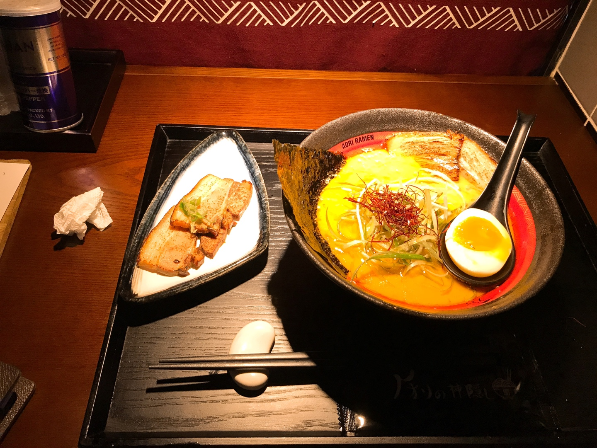
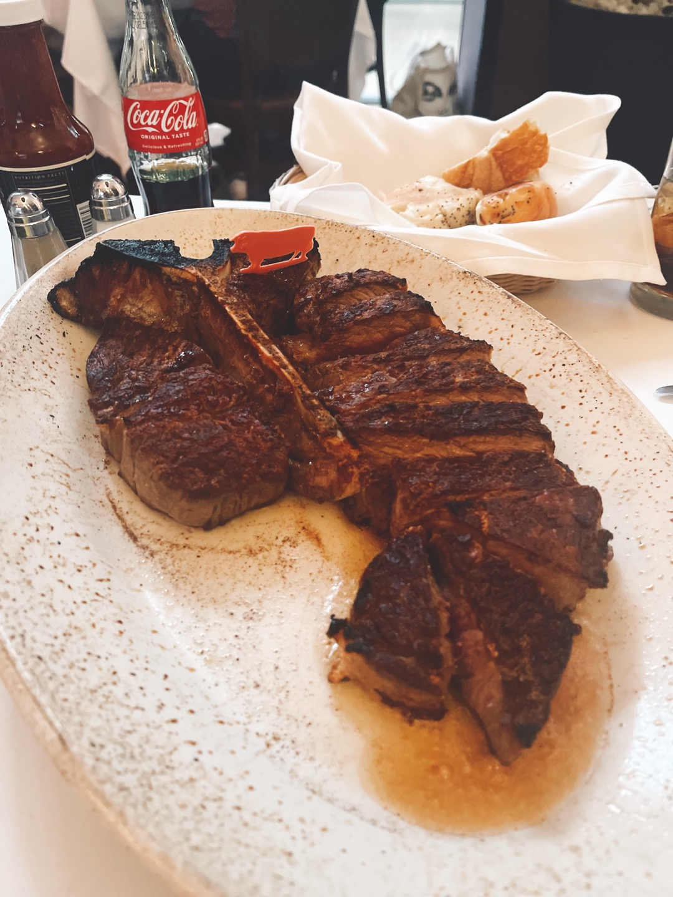
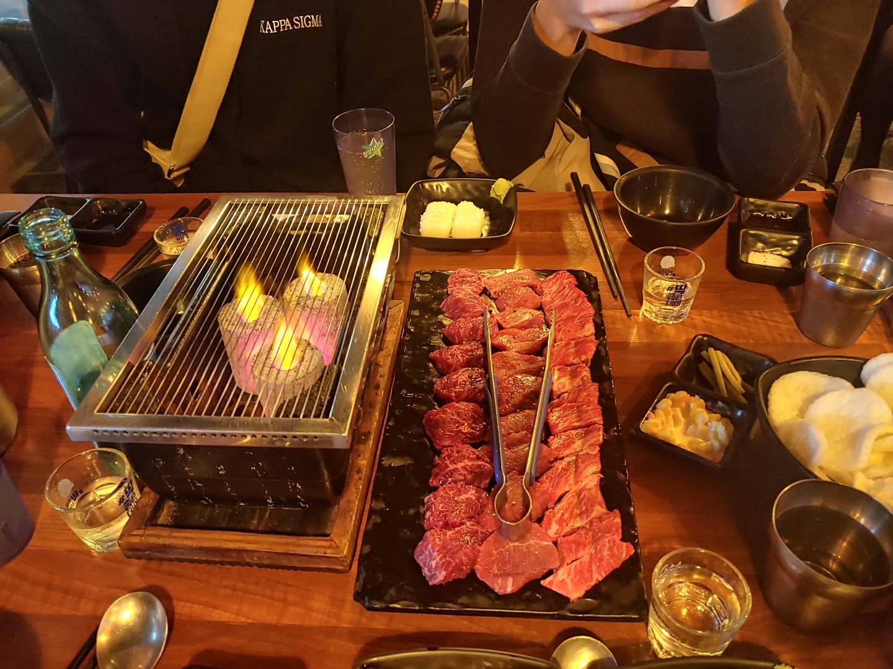

라멘, 꽤 예전에 먹었지만 매콤하게 맛있어서 계속 기억난다.
텍사스 브리스킷, 생각보다 느끼했지만, 고기도 부드럽고 맛있었던다.

스테이크, 뉴욕 갔을때 먹은 스테이크, 육향도 좋고 육질도 좋아서 맛있었지만, 가격이 너무 비쌌다.
펜케이크, 한국에 오리지널 팬케이크하우스가 있어서 놀랐지만, 오랜만에 먹어서 맛있었다.

야키니쿠, 일본엔 몇번 갔지만, 한번도 안먹었던 야키니쿠, 한국에서 별 기대 하지않고 먹었지만, 예상외로 맛있었다.
스테이크 덮밥, 일본에서 친구의 추천으로 방문한 곳. 일단 맛도 맛있었지만, 플레이팅이 엄청 기억에 남았다.